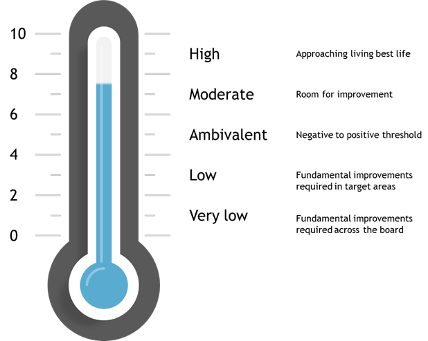
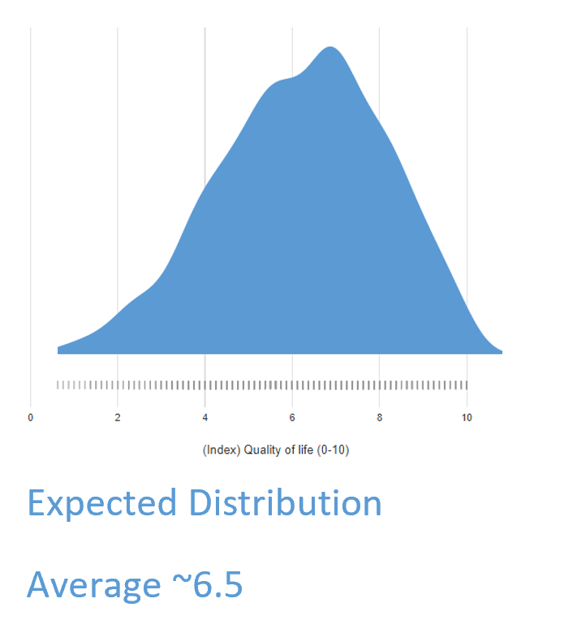
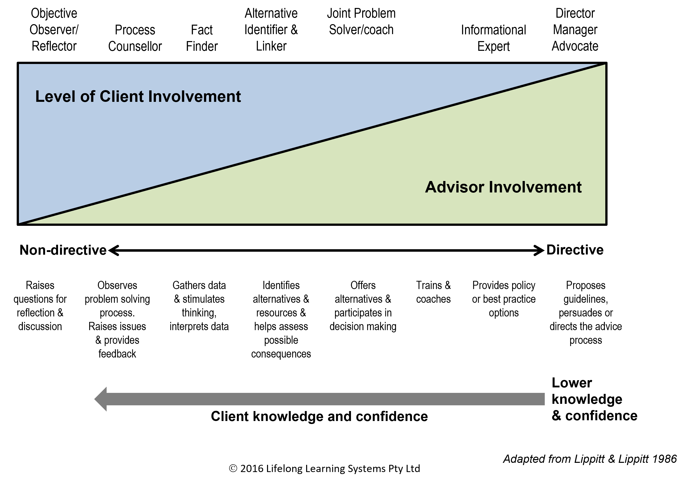

Quality of Life Tracker Activity
Intro Warm Up and Setting Expectations
Our mission
We believe effective Financial Planning is all about maximising your ongoing quality of life by supporting you in managing both your tangible financial and less tangible personal assets and liabilities.
We consider quality-of-life is not necessarily determined by how much money you have but rather how and how you invest and use it to meet your most important needs and goals.
Accordingly we will strive to listen and understand your special wishes, worries, hopes and fears, starting with your most pressing jobs to be done.
So, before we start working through a detailed description of your situation and needs, we would like to offer you the opportunity of using a Quality-of Life Tracker to set a benchmark as to how satisfied you are with your current quality-of-life.
This tool helps us explore some of the key pillars of your quality of life including your health and mindset, your connection to others, your confidence in dealing with life’s challenges, your sense of purpose and meaning as well as your overall life satisfaction.
“Are you comfortable to have a go at this now?
OK let’s get started. Generally, The QOL Tracker takes about 10 minutes to complete and then we can score and discuss the results. As mentioned in our Financial Services Guide all your information and results belong to you and are held in a secure file.”
QOL Components
Personal Health
Firstly, let’s work through some questions on how you feel about your personal health, including your emotional well-being. Before we get started just take a moment to consider how you have been feeling over the last few weeks overall. Have you generally been 'feeling good' about your life?
Ok so for the first question. How frequently have you been feeling active with plenty of energy these days”, from ‘Always’, to ‘Often’, ‘Sometimes’, ‘Rarely’ or ‘Never’?
The next question focuses on how well you feel you have coped with any health issues you may have recently encountered. Would you say you are coping very well ‘Always’, ‘Often’, ‘Sometimes’, ‘Rarely’ or ‘Never’? (If you’ve had no health issues assume your general preventative strategies have worked and rate yourself a 10.)
The third question in this Personal Health-related cluster focuses on how frequently you typically feel positive and optimistic about your life – Would you say ‘Always’, ‘Often’, ‘Sometimes’, ‘Rarely’ or ‘Never’?
The final personal health question provides an opportunity for you to reflect on the degree to which you have been using your time and energy day to day on what is most important to you. Take a moment to consider this in recent weeks. Would you say ‘Always’, ‘Often’, ‘Sometimes’, ‘Rarely’ or ‘Never’?
Two key communication processes in particular accelerate trust building.
Firstly, to initially park your problem solving (convergent mindset ie:-what are the likely best solutions?) to one side and just focus and observe (divergent- open discovery mindset) how they go about the process of considering and answering the QOL Tracker Questions. What body language do they display which may reveal their deeper thoughts or how they might be feeling.
Are they more introverted (need time to think and reflect before answering each question) or extraverted and tend to go into long explanations about their various ailments before rating their overall personal health?
Do you get any insights as to their sensory/learning preferences, eg:- Visual (like to see graphs, spread sheets, diagrams, reading reports etc), Auditory (learn through hearing case histories, stories, or discussing their own experiences) and Kinaesthetic (develop understanding by doing surveys, demonstrating, experimenting etc).
By picking client’s sensory preferences you can then use them to aid their decision making. For example, more introverted clients with visual sensory preferences may need to take written reports with graphs and diagrams away in order to think through their options before coming back with a decision.
How can you best frame open questions (that avoid yes/no answers) to help them reflect more deeply on their experiences and feelings?
How can you resist listening to reply rather than listening to understand?
And most significantly how can you show them you have heard what they are saying and feeling by reflecting what you have picked up? This can be done by summarising in your own words (not parroting).
- What they are saying or have said “So what I understand caused the mistake was……”
- How they are feeling “I’m picking up that the incident you described made you feel pretty alarmed”
- And then Empathising (not sympathising) “If that happened to me, I would also feel pretty let-down if …
Connection
Now let’s move to the next set of questions that focus on how connected you feel to the world around you.
Over the last few weeks have you felt lonely or isolated at all? ‘Would you say ‘Always’, ‘Often’, ‘Sometimes’, ‘Rarely’ or ‘Never’?
Next, over the last few weeks have you been regularly meeting up with your inner circle of friends? ‘Would you say ‘Always’, ‘Often’, ‘Sometimes’, ‘Rarely’ or ‘Never’?
Capability
The next area explores how confident you have felt in dealing with life’s challenges and the demands being placed on you.
Looking back over the last few weeks how frequently have you felt confident you can solve most of the challenges faced in your life and achieve the things you want? ‘Would you say ‘Always’, ‘Often’, ‘Sometimes’, ‘Rarely’ or ‘Never’?
Purpose
The next question focuses on the extent your interests and involvement in life have given you a sense of meaning and purpose.
Again, thinking about how your personal interests and involvement in life provide you a sense of meaning and purpose on a day to day basis would you best say ‘Always’, ‘Often’, ‘Sometimes’, ‘Rarely’ or ‘Never’?
Life Satisfaction
Finally visualise a ladder with 10 steps. Then ask yourself in terms of your overall life satisfaction what step are you currently standing on, where the bottom represents the worst possible life you could imagine and the top the best life you hope to be living.
Assessment Validation
You scored 7.6 out of 10 overall. This is a good score but still leaves some room for improvement.

This was largely driven by;
Relatively high scores across Personal health (8 or higher)
and
Relatively low scores below 6 in
- Capability (i.e. confidence dealing with life’s challenges and the demands being placed on you)
- Purpose (i.e. the extent your interests and involvement in life give you an enduring sense of meaning and purpose.
How do you feel about your assessment of your current Quality-of-Life? Do any of your responses to individual questions highlight any particular successes or achievements you have secured over the last few weeks or triggered any particular underlying concerns or anxieties which you may now need to address?
Looking forward, what specific QOL dimensions/issues would you like to work on during the ongoing financial planning process relating to:-
- Personal health, fitness and resilience
- Connection with family friends and others
- Capability to get things done and/or resolve issues and
- Having a greater sense of purpose and meaning
“In maintaining your QOL over time, you will need to take advantage of opportunities that present themselves as well as successfully adapting to the inevitable and unexpected shocks and events (eg covid) that will impact your life. Also, the internal changes that arise from the inevitable process of aging (eg eyesight deterioration, hearing loss and mobility difficulties).
“We see as part of our job to help you anticipate these changes and to adapt where possible, turning threats into opportunities. In fact, what we find with other clients is that having a practical financial plan provides people with confidence in their ability to adapt to changing circumstances. Plans can sort of be an anchor when unexpected change arises and can be adapted accordingly. However, with no plans there is often a scramble to adapt. Contingencies can also be built into plans.”
Support Resources
Scoring
Under the hood
Scoring technical notes
Score components as below, with a total average across all.
- Never = 0
- Rarely = 1
- Sometimes = 4
- Often = 7
- Always = 10
This builds in natural weighting of the scores i.e.
- Personal Health* = 25%
- Connection = 13%
- Capability = 6%
- Purpose = 6%
- Life Satisfaction = 50%
- Total = 100%

Then to this average add your Life satisfaction score (0 - 10 ) and finally divide this total by 2 to arrive at your current Quality-of-Life Score of between 0-10.
Adviser Role
- Reflective listener
- Facilitator
- Conversation starter
Multiple roles of an Advisor

Acitivity Skills Summary
Active listening skills including:
- Listening to understand rather than just to reply
- Being fully present and patient when the client is disclosing
- Reflecting what the client has said and/or is feeling to demonstrate full understanding
- Framing good ‘open’ rather than too many ‘closed’ questions
- Being aware of the difference between what a client may say they want and what they really need
- How to support clients deal with major disappointments and regrets
- Understanding where the boundary lies between being a financial advisor or a counsellor/therapist
- Knowing when to refer and where clients can seek specialised support services (referral lists)
Financial Planners need to be not only good technical financial planners but also ‘aware and sensitive’ change facilitators. As the saying goes ‘change is exciting when we initiate it but threatening when done to us’.
Typical aging processes bring a range of tangible and intangible body changes. Many of these are perceived as threats/losses, such as deteriorating eyesight, hearing difficulties, worn-out joints and cognitive functioning e.g. in short-term memory. All need to be adapted to or compensated for. This is where Financial Planners need to demonstrate high levels of empathy and effective change facilitation skills, as well as the ability to build likely financial impacts (e.g. expensive support needs) into staged financial plans.
Glossary of Terms
Practical communication processes and techniques which planners can use to:
- Active listening - The XYZ ….
- Capability - The XYZ ….
- Connection - The XYZ ….
- Quality of life - The XYZ ….
- Personal health - The XYZ ….
- Purpose and meaning - The XYZ ….
- Life satisfaction - The XYZ ….
FAQs
A FAQ is a list of frequently asked questions (FAQs) and answers on a particular topic.